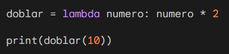

Primer Corte
En esta parte del semestre aprendí a utilizar las funciones map, filter, reduce y la funcion lambda.
La funcion map() se utiliza para aplicar una función a cada elemento de una secuencia. Devuelve un objeto map, que puede ser convertido a una lista, tupla, etc.
Por ejemplo, podemos usar la función para convertir una lista de cadenas a números:

Este código imprimirá el siguiente resultado: [1, 2, 3, 4]
La función map() también se puede utilizar para aplicar una función a dos o más secuencias.
Por ejemplo, el siguiente código calcula la suma de los elementos de dos listas:

Este código imprimirá el siguiente resultado: [5, 7, 9]
La funcion filter() se utiliza para filtrar los elementos de una secuencia según una condición. Devuelve un objeto iterador, que puede ser convertido a una lista, tupla, etc.
Por ejemplo, podemos usar la función para obtener una lista de números pares de una lista de números:
Este código imprimirá el siguiente resultado: [2, 4, 6]
Otro ejemplo es el cálculo de la longitud de las cadenas que tienen más de tres caracteres:
Este código imprimirá el siguiente resultado: ['hola', 'mundo', 'ejemplo']
La función reduce() se utiliza para realizar un cálculo acumulativo sobre una secuencia de valores. El primer argumento de la función es una función que recibe dos argumentos y devuelve un valor.
Por ejemplo, podemos usar la función reduce() para calcular la suma de todos los elementos de una lista:

Este código imprimirá el siguiente resultado: 10
La función también se puede utilizar para realizar otras operaciones acumulativas, como la concatenación de cadenas, la comparación de valores, etc.
Por ejemplo, el siguiente código concatena todas las cadenas de una lista:
Este código imprimirá el siguiente resultado: Holamundo
Las funciones lambda son una forma de crear funciones anónimas en Python. Las funciones lambda se pueden usar en cualquier lugar donde se pueda usar una función normal.
Por ejemplo, podemos usar una función lambda para calcular el doble de un número:

Este código imprimirá el siguiente resultado: 20
Las funciones lambda también se pueden usar con las funciones map(), filter() y reduce().

Este código imprimirá el siguiente resultado: ['hola', 'mundo', 'ejemplo']
Segundo Corte
En esta parte del semestre aprendí programacion orientada a objetos y Patrones; Patrones de diseño, Patrones creacionales y Patrones estructurales
La programación orientada a objetos (POO) es un paradigma de programación que organiza el código en torno a objetos. Los objetos son entidades que tienen datos y comportamientos.
En el siguiente ejemplo crearemos una clase llamada *Persona*. Esta clase tendrá los siguientes atributos:
- nombre: el nombre de la persona
apellido: el apellido de la persona
edad: la edad de la persona

La clase también tiene un método llamado hablar(). Este método imprime un mensaje que incluye el nombre, el apellido y la edad de la persona.
Este código imprimirá el siguiente resultado: Hola, soy Juan Perez y tengo 20 años. ¿Cómo estás?
La POO es un paradigma de programación potente que puede ser utilizado para crear código más organizado y eficiente.
Tercer Corte
Aquí puedes poner la información del tercer corte